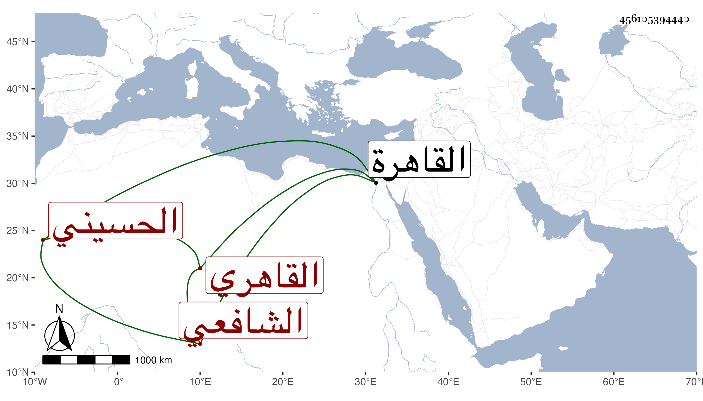

0902Sakhawi.DawLamic.ITO20230111-ara1.EIS1600.456105394440
Biography ID: 456105394440
إبراهيم بن أحمد بن علي بن خلف بن عبد العزيز بن بدران برهان الدين أبو السعود بن الشهاب الطنتدائي الحسيني نسبة لسكنى الحسينية القاهري نزيل الشرابشية بالقرب من جامع الأقمر الشافعي سبط الشمس البوصيري الآتي في المحمدين وأبوه في الأحمدين وهو بكنيته أشهر . ولد في سادس عشر جمادى الأولى سنة ثمانمائة بالقاهرة وأحضر وهو ابن ثلاثة أشهر على الشرف أبي بكر بن جماعة المسلسل ثم سمع بعد أن ترعرع على الشرف بن الكويك والجمال بن فضل الله والكمال بن خير والشموس ابن الجزري وابن المصري ومحمد بن حسن البيجوري والنور بن الفوي وسبط الزبير والشهب الكلوتاتي والواسطي وشيخنا والزين القمني في آخرين وأجاز له الحلاوي والشهاب الجوهري والشمس المنصفي وآخرون وحفظ القرآن واشتغل قليلا وتنزل بالمدارس وبالخانقاه الصلاحية وولى إعادة بالسابقية ولازم قراءة الصحيح والشفا ونحوهما في بعض الجوامع لبعض من يثيبه عليه وكذا تكسب بالشهادة وقتا ثم ترك وكان خيرا ساكنا متوددا متواضعا أجاز لي . وهو في معجم التقى بن فهد وولده باختصار . ومات في أوائل ربيع الأول سنة ست وستين رحمه الله .
